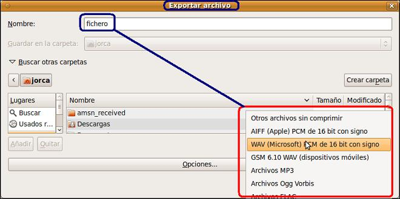

2. Edición con audacity - Primer fichero
Una vez terminado nuestro proyecto
(que puede contener varias pistas de audio) podemos exportarlo a un
fichero de audio no comprimido como WAV o a un fichero de audio
comprimido como MP3 o OGG.

Cuando creamos un proyecto nuevo debemos revisar las preferencias de éste (Editar->Preferencias) para definir su frecuencia de muestreo, resolución, formato de exportación no comprimido y características de la exportación a MP3 u OGG.
Una vez creado un proyecto puedo trabajar con las opciones del menú Proyecto que me permiten, por ejemplo:
-
Importar un archivo de audio (opción “Importar audio”) que creará una pista (mono o estéreo) de audio en nuestro proyecto. Audacity puede importar WAV, AIFF, AU, IRCAM, MP3 y OGG.
-
Utilizar las opciones de grabación de Audacity. Utilizando el botón grabar de la barra de control, se creará una pista nueva (con las opciones definidas en preferencias) con la señal sonora que procede de la entrada definida en la barra mezcladora (micrófono, CD, Line In). Para parar la grabación utilizaremos el botón Parar de la barra de control.
-
Nueva pista de audio y nueva pista estéreo. Estas opciones crean una pista mono o estéreo vacía. Podemos utilizarlas para pegar audio y realizar cambios en él sin modificar una pista.
La imagen representa una pista de audio estéreo (zona superior) en un proyecto. En la parte izquierda nos muestra la frecuencia de muestreo (44100 Hz) y la resolución (16 bits). Un botón Silencio para silenciar la pista, un botón Solo para silenciar todas las pistas menos ésta, un regulador para aumentar o disminuir el volumen y otro regulador para el canal izquierdo y derecho (sólo en estéreo). En el ángulo superior izquierdo aparece una cruz que nos permite eliminar esta pista del proyecto.En la zona inferior se puede observar una pista de audio (mono). La diferencia radica, fundamentalmente, que la pista estéreo la componen dos canales.
En este video podemos observar que, antes de grabar nuestra voz, podemos modificar las preferencias de nuestro programa para que el mismo lo haga en modo estéreo (dos canales). Interesante para completar los aspectos teóricos anteriores.
Jo.R.C.A. 2004 - 2011

Edición de Audio y Video con Software Libre by José Ramón Cerdeira Alonso is licensed under a Creative Commons Reconocimiento-No comercial-Compartir bajo la misma licencia 3.0 España License